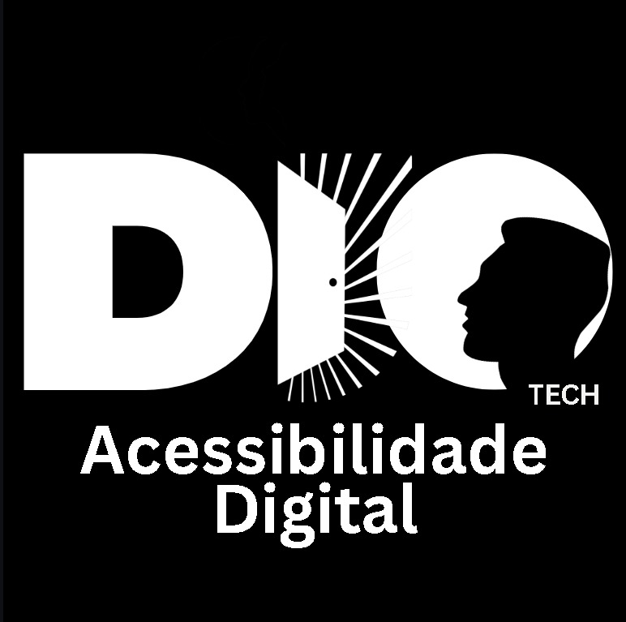

DIO Tech - The Door is Open
Nossa plataforma corporativa está em desenvolvimento.
Em breve, a porta estará aberta para novas soluções em Acessibilidade Digital.

Nossa plataforma corporativa está em desenvolvimento.
Em breve, a porta estará aberta para novas soluções em Acessibilidade Digital.